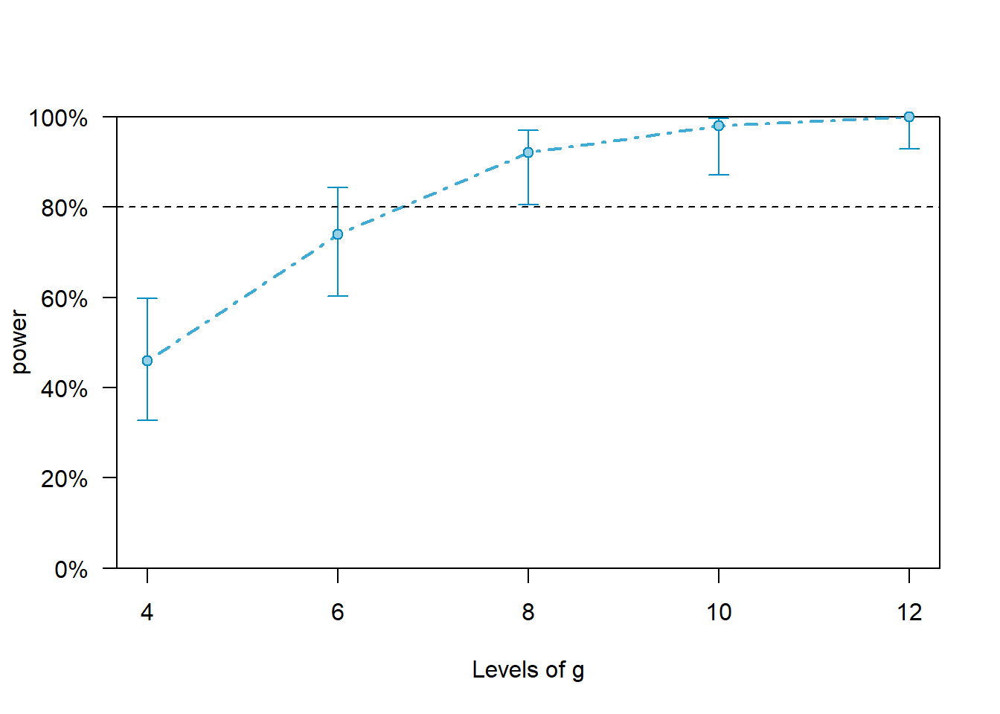

Parallelizing simr::powercurve() in R
The powercurve function from the simr package in R (Green & MacLeod, 2016) can incur very long running times when the method used for the calculation of p values is Kenward-Roger or Satterthwaite (see Luke, 2017). Here I suggest three ways for cutting down this time.
Where possible, use a high-performance (or high-end) computing cluster. This removes the need to use personal computers for these long jobs.
In case you’re using the
fixed()parameter of thepowercurvefunction, and calculating the power for different effects, run these at the same time (‘in parallel’) on different machines, rather than one after another.Parallelize the
breaksargument. Thebreaksargument of thepowercurvefunction allows the calculation of power for different levels of the grouping factor passed toalong. Some grouping factors are participant, trial and item. Thebreaksargument sets the different sample sizes for which power will be calculated. Parallelizingbreaksis done by running each number of levels in a separate function. When each has been run and saved, they arecombined to allow the plotting. This procedure is demonstrated below.
Parallelizing breaks
Let’s do a minimal example using a toy lmer model. A power curve will be craeted for the fixed effect of x along different sample sizes of the grouping factor g.
Notice that the six sections of the power curve below are serially arranged, one after another. In contrast, to enable parallel processing, each power curve would be placed in a single script, and they would all be run at the same time.
Although the power curves below run in a few minutes, the settings that are often used (e.g., a larger model; fixed('x', 'sa') instead of fixed('x'); nsim = 500 instead of nsim = 50) take far longer. That is where parallel processing becomes useful.1
library(lme4)
library(simr)
# Toy model
fm = lmer(y ~ x + (x | g), data = simdata)
# Extend sample size of `g`
fm_extended_g = extend(fm, along = 'g', n = 12)
# Parallelize `breaks` by running each number of levels in a separate function.
# 4 levels of g
pwcurve_4g = powerCurve(fm_extended_g, fixed('x'), along = 'g', breaks = 4, nsim = 50, seed = 123)## Simulating: | |Simulating: |= |Simulating: |== |Simulating: |=== |Simulating: |===== |Simulating: |====== |Simulating: |======= |Simulating: |========= |Simulating: |========== |Simulating: |=========== |Simulating: |============= |Simulating: |============== |Simulating: |=============== |Simulating: |================= |Simulating: |================== |Simulating: |=================== |Simulating: |===================== |Simulating: |====================== |Simulating: |======================= |Simulating: |========================= |Simulating: |========================== |Simulating: |=========================== |Simulating: |============================= |Simulating: |============================== |Simulating: |=============================== |Simulating: |================================= |Simulating: |================================== |Simulating: |=================================== |Simulating: |==================================== |Simulating: |====================================== |Simulating: |======================================= |Simulating: |======================================== |Simulating: |========================================== |Simulating: |=========================================== |Simulating: |============================================ |Simulating: |============================================== |Simulating: |=============================================== |Simulating: |================================================ |Simulating: |================================================== |Simulating: |=================================================== |Simulating: |==================================================== |Simulating: |====================================================== |Simulating: |======================================================= |Simulating: |======================================================== |Simulating: |========================================================== |Simulating: |=========================================================== |Simulating: |============================================================ |Simulating: |============================================================== |Simulating: |=============================================================== |Simulating: |================================================================ |Simulating: |==================================================================|(1/1) (1/1) Simulating: | |(1/1) Simulating: |= |(1/1) Simulating: |== |(1/1) Simulating: |=== |(1/1) Simulating: |==== |(1/1) Simulating: |====== |(1/1) Simulating: |======= |(1/1) Simulating: |======== |(1/1) Simulating: |========= |(1/1) Simulating: |========== |(1/1) Simulating: |============ |(1/1) Simulating: |============= |(1/1) Simulating: |============== |(1/1) Simulating: |=============== |(1/1) Simulating: |================ |(1/1) Simulating: |================== |(1/1) Simulating: |=================== |(1/1) Simulating: |==================== |(1/1) Simulating: |===================== |(1/1) Simulating: |====================== |(1/1) Simulating: |======================== |(1/1) Simulating: |========================= |(1/1) Simulating: |========================== |(1/1) Simulating: |=========================== |(1/1) Simulating: |============================ |(1/1) Simulating: |============================== |(1/1) Simulating: |=============================== |(1/1) Simulating: |================================ |(1/1) Simulating: |================================= |(1/1) Simulating: |================================== |(1/1) Simulating: |==================================== |(1/1) Simulating: |===================================== |(1/1) Simulating: |====================================== |(1/1) Simulating: |======================================= |(1/1) Simulating: |======================================== |(1/1) Simulating: |========================================== |(1/1) Simulating: |=========================================== |(1/1) Simulating: |============================================ |(1/1) Simulating: |============================================= |(1/1) Simulating: |============================================== |(1/1) Simulating: |================================================ |(1/1) Simulating: |================================================= |(1/1) Simulating: |================================================== |(1/1) Simulating: |=================================================== |(1/1) Simulating: |==================================================== |(1/1) Simulating: |====================================================== |(1/1) Simulating: |======================================================= |(1/1) Simulating: |======================================================== |(1/1) Simulating: |========================================================= |(1/1) Simulating: |========================================================== |(1/1) Simulating: |============================================================|(1/1) # 6 levels of g
pwcurve_6g = powerCurve(fm_extended_g, fixed('x'), along = 'g', breaks = 6, nsim = 50, seed = 123)## Simulating: | |Simulating: |= |Simulating: |== |Simulating: |=== |Simulating: |===== |Simulating: |====== |Simulating: |======= |Simulating: |========= |Simulating: |========== |Simulating: |=========== |Simulating: |============= |Simulating: |============== |Simulating: |=============== |Simulating: |================= |Simulating: |================== |Simulating: |=================== |Simulating: |===================== |Simulating: |====================== |Simulating: |======================= |Simulating: |========================= |Simulating: |========================== |Simulating: |=========================== |Simulating: |============================= |Simulating: |============================== |Simulating: |=============================== |Simulating: |================================= |Simulating: |================================== |Simulating: |=================================== |Simulating: |==================================== |Simulating: |====================================== |Simulating: |======================================= |Simulating: |======================================== |Simulating: |========================================== |Simulating: |=========================================== |Simulating: |============================================ |Simulating: |============================================== |Simulating: |=============================================== |Simulating: |================================================ |Simulating: |================================================== |Simulating: |=================================================== |Simulating: |==================================================== |Simulating: |====================================================== |Simulating: |======================================================= |Simulating: |======================================================== |Simulating: |========================================================== |Simulating: |=========================================================== |Simulating: |============================================================ |Simulating: |============================================================== |Simulating: |=============================================================== |Simulating: |================================================================ |Simulating: |==================================================================|(1/1) (1/1) Simulating: | |(1/1) Simulating: |= |(1/1) Simulating: |== |(1/1) Simulating: |=== |(1/1) Simulating: |==== |(1/1) Simulating: |====== |(1/1) Simulating: |======= |(1/1) Simulating: |======== |(1/1) Simulating: |========= |(1/1) Simulating: |========== |(1/1) Simulating: |============ |(1/1) Simulating: |============= |(1/1) Simulating: |============== |(1/1) Simulating: |=============== |(1/1) Simulating: |================ |(1/1) Simulating: |================== |(1/1) Simulating: |=================== |(1/1) Simulating: |==================== |(1/1) Simulating: |===================== |(1/1) Simulating: |====================== |(1/1) Simulating: |======================== |(1/1) Simulating: |========================= |(1/1) Simulating: |========================== |(1/1) Simulating: |=========================== |(1/1) Simulating: |============================ |(1/1) Simulating: |============================== |(1/1) Simulating: |=============================== |(1/1) Simulating: |================================ |(1/1) Simulating: |================================= |(1/1) Simulating: |================================== |(1/1) Simulating: |==================================== |(1/1) Simulating: |===================================== |(1/1) Simulating: |====================================== |(1/1) Simulating: |======================================= |(1/1) Simulating: |======================================== |(1/1) Simulating: |========================================== |(1/1) Simulating: |=========================================== |(1/1) Simulating: |============================================ |(1/1) Simulating: |============================================= |(1/1) Simulating: |============================================== |(1/1) Simulating: |================================================ |(1/1) Simulating: |================================================= |(1/1) Simulating: |================================================== |(1/1) Simulating: |=================================================== |(1/1) Simulating: |==================================================== |(1/1) Simulating: |====================================================== |(1/1) Simulating: |======================================================= |(1/1) Simulating: |======================================================== |(1/1) Simulating: |========================================================= |(1/1) Simulating: |========================================================== |(1/1) Simulating: |============================================================|(1/1) # 8 levels of g
pwcurve_8g = powerCurve(fm_extended_g, fixed('x'), along = 'g', breaks = 8, nsim = 50, seed = 123)## Simulating: | |Simulating: |= |Simulating: |== |Simulating: |=== |Simulating: |===== |Simulating: |====== |Simulating: |======= |Simulating: |========= |Simulating: |========== |Simulating: |=========== |Simulating: |============= |Simulating: |============== |Simulating: |=============== |Simulating: |================= |Simulating: |================== |Simulating: |=================== |Simulating: |===================== |Simulating: |====================== |Simulating: |======================= |Simulating: |========================= |Simulating: |========================== |Simulating: |=========================== |Simulating: |============================= |Simulating: |============================== |Simulating: |=============================== |Simulating: |================================= |Simulating: |================================== |Simulating: |=================================== |Simulating: |==================================== |Simulating: |====================================== |Simulating: |======================================= |Simulating: |======================================== |Simulating: |========================================== |Simulating: |=========================================== |Simulating: |============================================ |Simulating: |============================================== |Simulating: |=============================================== |Simulating: |================================================ |Simulating: |================================================== |Simulating: |=================================================== |Simulating: |==================================================== |Simulating: |====================================================== |Simulating: |======================================================= |Simulating: |======================================================== |Simulating: |========================================================== |Simulating: |=========================================================== |Simulating: |============================================================ |Simulating: |============================================================== |Simulating: |=============================================================== |Simulating: |================================================================ |Simulating: |==================================================================|(1/1) (1/1) Simulating: | |(1/1) Simulating: |= |(1/1) Simulating: |== |(1/1) Simulating: |=== |(1/1) Simulating: |==== |(1/1) Simulating: |====== |(1/1) Simulating: |======= |(1/1) Simulating: |======== |(1/1) Simulating: |========= |(1/1) Simulating: |========== |(1/1) Simulating: |============ |(1/1) Simulating: |============= |(1/1) Simulating: |============== |(1/1) Simulating: |=============== |(1/1) Simulating: |================ |(1/1) Simulating: |================== |(1/1) Simulating: |=================== |(1/1) Simulating: |==================== |(1/1) Simulating: |===================== |(1/1) Simulating: |====================== |(1/1) Simulating: |======================== |(1/1) Simulating: |========================= |(1/1) Simulating: |========================== |(1/1) Simulating: |=========================== |(1/1) Simulating: |============================ |(1/1) Simulating: |============================== |(1/1) Simulating: |=============================== |(1/1) Simulating: |================================ |(1/1) Simulating: |================================= |(1/1) Simulating: |================================== |(1/1) Simulating: |==================================== |(1/1) Simulating: |===================================== |(1/1) Simulating: |====================================== |(1/1) Simulating: |======================================= |(1/1) Simulating: |======================================== |(1/1) Simulating: |========================================== |(1/1) Simulating: |=========================================== |(1/1) Simulating: |============================================ |(1/1) Simulating: |============================================= |(1/1) Simulating: |============================================== |(1/1) Simulating: |================================================ |(1/1) Simulating: |================================================= |(1/1) Simulating: |================================================== |(1/1) Simulating: |=================================================== |(1/1) Simulating: |==================================================== |(1/1) Simulating: |====================================================== |(1/1) Simulating: |======================================================= |(1/1) Simulating: |======================================================== |(1/1) Simulating: |========================================================= |(1/1) Simulating: |========================================================== |(1/1) Simulating: |============================================================|(1/1) # 10 levels of g
pwcurve_10g = powerCurve(fm_extended_g, fixed('x'), along = 'g', breaks = 10, nsim = 50, seed = 123)## Simulating: | |Simulating: |= |Simulating: |== |Simulating: |=== |Simulating: |===== |Simulating: |====== |Simulating: |======= |Simulating: |========= |Simulating: |========== |Simulating: |=========== |Simulating: |============= |Simulating: |============== |Simulating: |=============== |Simulating: |================= |Simulating: |================== |Simulating: |=================== |Simulating: |===================== |Simulating: |====================== |Simulating: |======================= |Simulating: |========================= |Simulating: |========================== |Simulating: |=========================== |Simulating: |============================= |Simulating: |============================== |Simulating: |=============================== |Simulating: |================================= |Simulating: |================================== |Simulating: |=================================== |Simulating: |==================================== |Simulating: |====================================== |Simulating: |======================================= |Simulating: |======================================== |Simulating: |========================================== |Simulating: |=========================================== |Simulating: |============================================ |Simulating: |============================================== |Simulating: |=============================================== |Simulating: |================================================ |Simulating: |================================================== |Simulating: |=================================================== |Simulating: |==================================================== |Simulating: |====================================================== |Simulating: |======================================================= |Simulating: |======================================================== |Simulating: |========================================================== |Simulating: |=========================================================== |Simulating: |============================================================ |Simulating: |============================================================== |Simulating: |=============================================================== |Simulating: |================================================================ |Simulating: |==================================================================|(1/1) (1/1) Simulating: | |(1/1) Simulating: |= |(1/1) Simulating: |== |(1/1) Simulating: |=== |(1/1) Simulating: |==== |(1/1) Simulating: |====== |(1/1) Simulating: |======= |(1/1) Simulating: |======== |(1/1) Simulating: |========= |(1/1) Simulating: |========== |(1/1) Simulating: |============ |(1/1) Simulating: |============= |(1/1) Simulating: |============== |(1/1) Simulating: |=============== |(1/1) Simulating: |================ |(1/1) Simulating: |================== |(1/1) Simulating: |=================== |(1/1) Simulating: |==================== |(1/1) Simulating: |===================== |(1/1) Simulating: |====================== |(1/1) Simulating: |======================== |(1/1) Simulating: |========================= |(1/1) Simulating: |========================== |(1/1) Simulating: |=========================== |(1/1) Simulating: |============================ |(1/1) Simulating: |============================== |(1/1) Simulating: |=============================== |(1/1) Simulating: |================================ |(1/1) Simulating: |================================= |(1/1) Simulating: |================================== |(1/1) Simulating: |==================================== |(1/1) Simulating: |===================================== |(1/1) Simulating: |====================================== |(1/1) Simulating: |======================================= |(1/1) Simulating: |======================================== |(1/1) Simulating: |========================================== |(1/1) Simulating: |=========================================== |(1/1) Simulating: |============================================ |(1/1) Simulating: |============================================= |(1/1) Simulating: |============================================== |(1/1) Simulating: |================================================ |(1/1) Simulating: |================================================= |(1/1) Simulating: |================================================== |(1/1) Simulating: |=================================================== |(1/1) Simulating: |==================================================== |(1/1) Simulating: |====================================================== |(1/1) Simulating: |======================================================= |(1/1) Simulating: |======================================================== |(1/1) Simulating: |========================================================= |(1/1) Simulating: |========================================================== |(1/1) Simulating: |============================================================|(1/1) # 12 levels of g
pwcurve_12g = powerCurve(fm_extended_g, fixed('x'), along = 'g', breaks = 12, nsim = 50, seed = 123)## Simulating: | |Simulating: |= |Simulating: |== |Simulating: |=== |Simulating: |===== |Simulating: |====== |Simulating: |======= |Simulating: |========= |Simulating: |========== |Simulating: |=========== |Simulating: |============= |Simulating: |============== |Simulating: |=============== |Simulating: |================= |Simulating: |================== |Simulating: |=================== |Simulating: |===================== |Simulating: |====================== |Simulating: |======================= |Simulating: |========================= |Simulating: |========================== |Simulating: |=========================== |Simulating: |============================= |Simulating: |============================== |Simulating: |=============================== |Simulating: |================================= |Simulating: |================================== |Simulating: |=================================== |Simulating: |==================================== |Simulating: |====================================== |Simulating: |======================================= |Simulating: |======================================== |Simulating: |========================================== |Simulating: |=========================================== |Simulating: |============================================ |Simulating: |============================================== |Simulating: |=============================================== |Simulating: |================================================ |Simulating: |================================================== |Simulating: |=================================================== |Simulating: |==================================================== |Simulating: |====================================================== |Simulating: |======================================================= |Simulating: |======================================================== |Simulating: |========================================================== |Simulating: |=========================================================== |Simulating: |============================================================ |Simulating: |============================================================== |Simulating: |=============================================================== |Simulating: |================================================================ |Simulating: |==================================================================|(1/1) (1/1) Simulating: | |(1/1) Simulating: |= |(1/1) Simulating: |== |(1/1) Simulating: |=== |(1/1) Simulating: |==== |(1/1) Simulating: |====== |(1/1) Simulating: |======= |(1/1) Simulating: |======== |(1/1) Simulating: |========= |(1/1) Simulating: |========== |(1/1) Simulating: |============ |(1/1) Simulating: |============= |(1/1) Simulating: |============== |(1/1) Simulating: |=============== |(1/1) Simulating: |================ |(1/1) Simulating: |================== |(1/1) Simulating: |=================== |(1/1) Simulating: |==================== |(1/1) Simulating: |===================== |(1/1) Simulating: |====================== |(1/1) Simulating: |======================== |(1/1) Simulating: |========================= |(1/1) Simulating: |========================== |(1/1) Simulating: |=========================== |(1/1) Simulating: |============================ |(1/1) Simulating: |============================== |(1/1) Simulating: |=============================== |(1/1) Simulating: |================================ |(1/1) Simulating: |================================= |(1/1) Simulating: |================================== |(1/1) Simulating: |==================================== |(1/1) Simulating: |===================================== |(1/1) Simulating: |====================================== |(1/1) Simulating: |======================================= |(1/1) Simulating: |======================================== |(1/1) Simulating: |========================================== |(1/1) Simulating: |=========================================== |(1/1) Simulating: |============================================ |(1/1) Simulating: |============================================= |(1/1) Simulating: |============================================== |(1/1) Simulating: |================================================ |(1/1) Simulating: |================================================= |(1/1) Simulating: |================================================== |(1/1) Simulating: |=================================================== |(1/1) Simulating: |==================================================== |(1/1) Simulating: |====================================================== |(1/1) Simulating: |======================================================= |(1/1) Simulating: |======================================================== |(1/1) Simulating: |========================================================= |(1/1) Simulating: |========================================================== |(1/1) Simulating: |============================================================|(1/1) Having saved each section of the power curve, we must now combine them to be able to plot them together.
# Create a destination object using any of the power curves above.
all_pwcurve = pwcurve_4g
# Combine results
all_pwcurve$ps = c(pwcurve_4g$ps[1], pwcurve_6g$ps[1], pwcurve_8g$ps[1], pwcurve_10g$ps[1], pwcurve_12g$ps[1])
# Combine the different numbers of levels.
all_pwcurve$xval = c(pwcurve_4g$nlevels, pwcurve_6g$nlevels, pwcurve_8g$nlevels, pwcurve_10g$nlevels, pwcurve_12g$nlevels)
print(all_pwcurve)## Power for predictor 'x', (95% confidence interval),
## by number of levels in g:
## 4: 46.00% (31.81, 60.68) - 40 rows
## 6: 74.00% (59.66, 85.37) - 60 rows
## 8: 92.00% (80.77, 97.78) - 80 rows
## 10: 98.00% (89.35, 99.95) - 100 rows
## 12: 100.0% (92.89, 100.0) - 120 rows
##
## Time elapsed: 0 h 0 m 9 splot(all_pwcurve, xlab = 'g sample size')
# For reproducibility purposes
sessionInfo()## R version 4.0.4 (2021-02-15)
## Platform: x86_64-apple-darwin17.0 (64-bit)
## Running under: macOS Big Sur 10.16
##
## Matrix products: default
## BLAS: /Library/Frameworks/R.framework/Versions/4.0/Resources/lib/libRblas.dylib
## LAPACK: /Library/Frameworks/R.framework/Versions/4.0/Resources/lib/libRlapack.dylib
##
## locale:
## [1] en_GB.UTF-8/en_GB.UTF-8/en_GB.UTF-8/C/en_GB.UTF-8/en_GB.UTF-8
##
## attached base packages:
## [1] stats graphics grDevices utils datasets methods base
##
## other attached packages:
## [1] simr_1.0.5 lme4_1.1-27.1 Matrix_1.3-4
##
## loaded via a namespace (and not attached):
## [1] Rcpp_1.0.6 lattice_0.20-44 tidyr_1.1.3 assertthat_0.2.1
## [5] digest_0.6.27 utf8_1.2.1 plyr_1.8.6 R6_2.5.0
## [9] cellranger_1.1.0 backports_1.2.1 evaluate_0.14 blogdown_1.3
## [13] pillar_1.6.1 rlang_0.4.11 curl_4.3.2 readxl_1.3.1
## [17] minqa_1.2.4 data.table_1.14.0 car_3.0-11 nloptr_1.2.2.2
## [21] jquerylib_0.1.4 rmarkdown_2.9 splines_4.0.4 stringr_1.4.0
## [25] foreign_0.8-81 broom_0.7.8 compiler_4.0.4 xfun_0.24
## [29] pkgconfig_2.0.3 mgcv_1.8-36 htmltools_0.5.1.1 tidyselect_1.1.1
## [33] tibble_3.1.2 binom_1.1-1 bookdown_0.22 rio_0.5.27
## [37] fansi_0.5.0 crayon_1.4.1 dplyr_1.0.7 MASS_7.3-54
## [41] grid_4.0.4 nlme_3.1-152 jsonlite_1.7.2 lifecycle_1.0.0
## [45] DBI_1.1.1 magrittr_2.0.1 zip_2.2.0 stringi_1.7.2
## [49] carData_3.0-4 bslib_0.2.5.1 ellipsis_0.3.2 vctrs_0.3.8
## [53] generics_0.1.0 boot_1.3-28 openxlsx_4.2.4 iterators_1.0.13
## [57] tools_4.0.4 forcats_0.5.1 glue_1.4.2 purrr_0.3.4
## [61] hms_1.1.0 plotrix_3.8-1 abind_1.4-5 pbkrtest_0.5.1
## [65] parallel_4.0.4 yaml_2.2.1 RLRsim_3.1-6 knitr_1.33
## [69] haven_2.4.1 sass_0.4.0Just the code
library(lme4)
library(simr)
# Toy model
fm = lmer(y ~ x + (x | g), data = simdata)
# Extend sample size of `g`
fm_extended_g = extend(fm, along = 'g', n = 12)
# Parallelize `breaks` by running each number of levels in a separate function.
# 4 levels of g
pwcurve_4g = powerCurve(fm_extended_g, fixed('x'), along = 'g', breaks = 4, nsim = 50, seed = 123)
# 6 levels of g
pwcurve_6g = powerCurve(fm_extended_g, fixed('x'), along = 'g', breaks = 6, nsim = 50, seed = 123)
# 8 levels of g
pwcurve_8g = powerCurve(fm_extended_g, fixed('x'), along = 'g', breaks = 8, nsim = 50, seed = 123)
# 10 levels of g
pwcurve_10g = powerCurve(fm_extended_g, fixed('x'), along = 'g', breaks = 10, nsim = 50, seed = 123)
# 12 levels of g
pwcurve_12g = powerCurve(fm_extended_g, fixed('x'), along = 'g', breaks = 12, nsim = 50, seed = 123)
# Create a destination object using any of the power curves above.
all_pwcurve = pwcurve_4g
# Combine results
all_pwcurve$ps = c(pwcurve_4g$ps[1], pwcurve_6g$ps[1], pwcurve_8g$ps[1], pwcurve_10g$ps[1], pwcurve_12g$ps[1])
# Combine the different numbers of levels.
all_pwcurve$xval = c(pwcurve_4g$nlevels, pwcurve_6g$nlevels, pwcurve_8g$nlevels, pwcurve_10g$nlevels, pwcurve_12g$nlevels)
print(all_pwcurve)
plot(all_pwcurve, xlab = 'Levels of g')
References
Brysbaert, M., & Stevens, M. (2018). Power analysis and effect size in mixed effects models: A tutorial. Journal of Cognition, 1(1), 9. http://doi.org/10.5334/joc.10
Green, P., & MacLeod, C. J. (2016). SIMR: An R package for power analysis of generalized linear mixed models by simulation. Methods in Ecology and Evolution 7(4), 493–498, https://doi.org/10.1111/2041-210X.12504
Kumle, L., Vo, M. L. H., & Draschkow, D. (2021). Estimating power in (generalized) linear mixed models: An open introduction and tutorial in R. Behavior Research Methods, 1–16. https://doi.org/10.3758/s13428-021-01546-0
Luke, S. G. (2017). Evaluating significance in linear mixed-effects models in R. Behavior Research Methods, 49(4), 1494–1502. https://doi.org/10.3758/s13428-016-0809-y
The number of simulations set by
nsimshould be larger (Brysbaert & Stevens, 2018; Green & MacLeod, 2016). In addition, the effect size forxshould be adjusted to the value that best fits with the planned study (Kumle et al., 2021).↩︎
Pablo Bernabeu
Psychology PhD student and teaching assistant at Lancaster University
After doing a research master’s, I became a PhD student and graduate teaching assistant in Psychology at Lancaster University. I’m investigating how conceptual processing is supported by linguistic and sensorimotor brain systems. I use methods such as behavioural and electroencephalographic experiments, corpus analysis, statistics and programming.